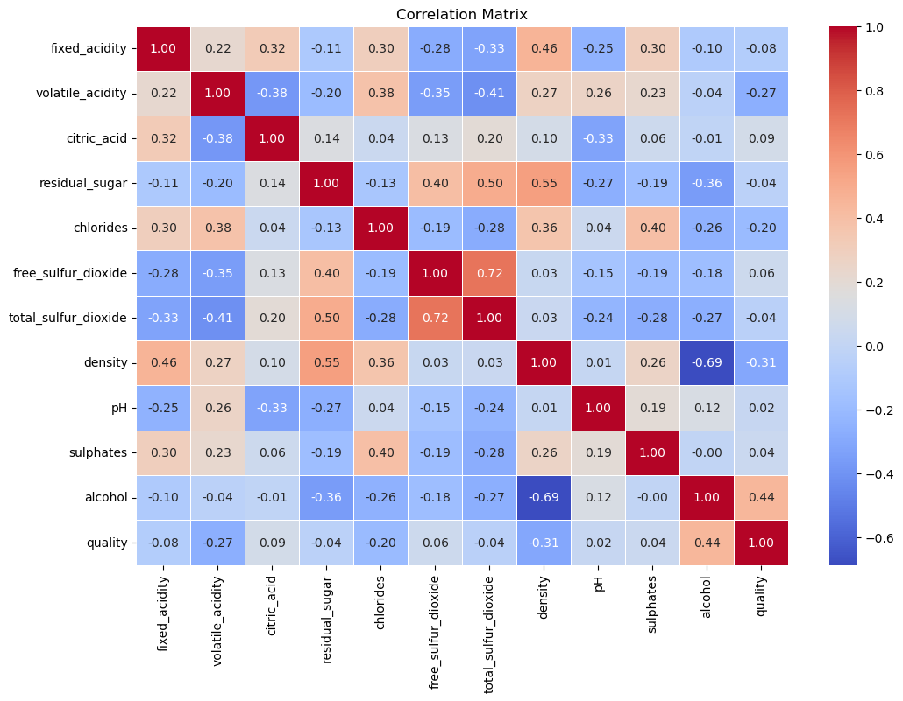

Code- Shubham Jain#
import csv
import sqlite3
# File path
file_path = r"C:\Users\proig\Downloads\winequalityN.csv"
# Step 1: Analyze missing values
missing_counts = {}
total_rows = 0
header = []
# Read the file and count missing values
with open(file_path, 'r') as file:
reader = csv.DictReader(file)
header = reader.fieldnames
missing_counts = {col: 0 for col in header}
for row in reader:
total_rows += 1
for col in header:
if not row[col]: # Empty or missing value
missing_counts[col] += 1
# Display missing value counts
print("Missing Values in Each Column:")
for col, count in missing_counts.items():
print(f"{col}: {count} missing ({(count / total_rows) * 100:.2f}%)")
# Step 2: Calculate column means for handling missing values
column_sums = {col: 0.0 for col in header if col != 'type'}
row_counts = {col: 0 for col in header if col != 'type'}
with open(file_path, 'r') as file:
reader = csv.DictReader(file)
for row in reader:
for col in column_sums:
try:
if row[col]:
column_sums[col] += float(row[col])
row_counts[col] += 1
except ValueError:
continue
column_means = {col: column_sums[col] / row_counts[col] for col in column_sums}
# Step 3: Normalize data into a SQLite database
conn = sqlite3.connect('wine_quality_normalized.db')
cursor = conn.cursor()
# Create tables
cursor.execute('''
CREATE TABLE IF NOT EXISTS Wine (
wine_id INTEGER PRIMARY KEY AUTOINCREMENT,
type TEXT NOT NULL
);
''')
cursor.execute('''
CREATE TABLE IF NOT EXISTS QualityMetrics (
metric_id INTEGER PRIMARY KEY AUTOINCREMENT,
wine_id INTEGER,
fixed_acidity REAL,
volatile_acidity REAL,
citric_acid REAL,
residual_sugar REAL,
chlorides REAL,
free_sulfur_dioxide REAL,
total_sulfur_dioxide REAL,
density REAL,
pH REAL,
sulphates REAL,
alcohol REAL,
quality INTEGER,
FOREIGN KEY (wine_id) REFERENCES Wine(wine_id)
);
''')
# Insert data into tables
wine_cache = {}
def safe_float(value, column_sum, row_count):
try:
return float(value) if value else column_sum / row_count
except ValueError:
return column_sum / row_count
with open(file_path, 'r') as file:
reader = csv.DictReader(file)
for row in reader:
# Insert into Wine table
wine_type = row['type']
if wine_type not in wine_cache:
cursor.execute("INSERT INTO Wine (type) VALUES (?)", (wine_type,))
conn.commit()
wine_cache[wine_type] = cursor.lastrowid
wine_id = wine_cache[wine_type]
# Insert into QualityMetrics table
cursor.execute('''
INSERT INTO QualityMetrics (
wine_id, fixed_acidity, volatile_acidity, citric_acid, residual_sugar, chlorides,
free_sulfur_dioxide, total_sulfur_dioxide, density, pH, sulphates, alcohol, quality
) VALUES (?, ?, ?, ?, ?, ?, ?, ?, ?, ?, ?, ?, ?)
''', (
wine_id,
safe_float(row['fixed acidity'], column_sums['fixed acidity'], row_counts['fixed acidity']),
safe_float(row['volatile acidity'], column_sums['volatile acidity'], row_counts['volatile acidity']),
safe_float(row['citric acid'], column_sums['citric acid'], row_counts['citric acid']),
safe_float(row['residual sugar'], column_sums['residual sugar'], row_counts['residual sugar']),
safe_float(row['chlorides'], column_sums['chlorides'], row_counts['chlorides']),
safe_float(row['free sulfur dioxide'], column_sums['free sulfur dioxide'], row_counts['free sulfur dioxide']),
safe_float(row['total sulfur dioxide'], column_sums['total sulfur dioxide'], row_counts['total sulfur dioxide']),
safe_float(row['density'], column_sums['density'], row_counts['density']),
safe_float(row['pH'], column_sums['pH'], row_counts['pH']),
safe_float(row['sulphates'], column_sums['sulphates'], row_counts['sulphates']),
safe_float(row['alcohol'], column_sums['alcohol'], row_counts['alcohol']),
int(row['quality']) if row['quality'] else None
))
conn.commit()
# Close the database connection
conn.close()
print("Database created and populated in 3NF.")
Missing Values in Each Column:
type: 0 missing (0.00%)
fixed acidity: 10 missing (0.15%)
volatile acidity: 8 missing (0.12%)
citric acid: 3 missing (0.05%)
residual sugar: 2 missing (0.03%)
chlorides: 2 missing (0.03%)
free sulfur dioxide: 0 missing (0.00%)
total sulfur dioxide: 0 missing (0.00%)
density: 0 missing (0.00%)
pH: 9 missing (0.14%)
sulphates: 4 missing (0.06%)
alcohol: 0 missing (0.00%)
quality: 0 missing (0.00%)
---------------------------------------------------------------------------
KeyboardInterrupt Traceback (most recent call last)
Cell In[1], line 99
96 wine_id = wine_cache[wine_type]
98 # Insert into QualityMetrics table
---> 99 cursor.execute('''
100 INSERT INTO QualityMetrics (
101 wine_id, fixed_acidity, volatile_acidity, citric_acid, residual_sugar, chlorides,
102 free_sulfur_dioxide, total_sulfur_dioxide, density, pH, sulphates, alcohol, quality
103 ) VALUES (?, ?, ?, ?, ?, ?, ?, ?, ?, ?, ?, ?, ?)
104 ''', (
105 wine_id,
106 safe_float(row['fixed acidity'], column_sums['fixed acidity'], row_counts['fixed acidity']),
107 safe_float(row['volatile acidity'], column_sums['volatile acidity'], row_counts['volatile acidity']),
108 safe_float(row['citric acid'], column_sums['citric acid'], row_counts['citric acid']),
109 safe_float(row['residual sugar'], column_sums['residual sugar'], row_counts['residual sugar']),
110 safe_float(row['chlorides'], column_sums['chlorides'], row_counts['chlorides']),
111 safe_float(row['free sulfur dioxide'], column_sums['free sulfur dioxide'], row_counts['free sulfur dioxide']),
112 safe_float(row['total sulfur dioxide'], column_sums['total sulfur dioxide'], row_counts['total sulfur dioxide']),
113 safe_float(row['density'], column_sums['density'], row_counts['density']),
114 safe_float(row['pH'], column_sums['pH'], row_counts['pH']),
115 safe_float(row['sulphates'], column_sums['sulphates'], row_counts['sulphates']),
116 safe_float(row['alcohol'], column_sums['alcohol'], row_counts['alcohol']),
117 int(row['quality']) if row['quality'] else None
118 ))
119 conn.commit()
121 # Close the database connection
KeyboardInterrupt:
import sqlite3
import pandas as pd
# Connect to the database
conn = sqlite3.connect('wine_quality_normalized.db')
# SQL join query to combine `Wine` and `QualityMetrics` tables
query = '''
SELECT
wm.metric_id,
w.type AS wine_type,
wm.fixed_acidity,
wm.volatile_acidity,
wm.citric_acid,
wm.residual_sugar,
wm.chlorides,
wm.free_sulfur_dioxide,
wm.total_sulfur_dioxide,
wm.density,
wm.pH,
wm.sulphates,
wm.alcohol,
wm.quality
FROM
QualityMetrics wm
JOIN
Wine w ON wm.wine_id = w.wine_id;
'''
# Execute the query and load data into a Pandas DataFrame
df = pd.read_sql_query(query, conn)
# Close the database connection
conn.close()
# Display the DataFrame
print(df)
metric_id wine_type fixed_acidity volatile_acidity citric_acid \
0 1 white 7.0 0.270 0.36
1 2 white 6.3 0.300 0.34
2 3 white 8.1 0.280 0.40
3 4 white 7.2 0.230 0.32
4 5 white 7.2 0.230 0.32
... ... ... ... ... ...
6492 6493 red 6.2 0.600 0.08
6493 6494 red 5.9 0.550 0.10
6494 6495 red 6.3 0.510 0.13
6495 6496 red 5.9 0.645 0.12
6496 6497 red 6.0 0.310 0.47
residual_sugar chlorides free_sulfur_dioxide total_sulfur_dioxide \
0 20.7 0.045 45.0 170.0
1 1.6 0.049 14.0 132.0
2 6.9 0.050 30.0 97.0
3 8.5 0.058 47.0 186.0
4 8.5 0.058 47.0 186.0
... ... ... ... ...
6492 2.0 0.090 32.0 44.0
6493 2.2 0.062 39.0 51.0
6494 2.3 0.076 29.0 40.0
6495 2.0 0.075 32.0 44.0
6496 3.6 0.067 18.0 42.0
density pH sulphates alcohol quality
0 1.00100 3.00 0.450000 8.8 6
1 0.99400 3.30 0.490000 9.5 6
2 0.99510 3.26 0.440000 10.1 6
3 0.99560 3.19 0.400000 9.9 6
4 0.99560 3.19 0.400000 9.9 6
... ... ... ... ... ...
6492 0.99490 3.45 0.580000 10.5 5
6493 0.99512 3.52 0.531215 11.2 6
6494 0.99574 3.42 0.750000 11.0 6
6495 0.99547 3.57 0.710000 10.2 5
6496 0.99549 3.39 0.660000 11.0 6
[6497 rows x 14 columns]
from sklearn.model_selection import train_test_split
import matplotlib.pyplot as plt
import pandas as pd
import sqlite3
# Load data from the database
conn = sqlite3.connect('wine_quality_normalized.db')
query = '''
SELECT
w.type AS wine_type,
wm.fixed_acidity,
wm.volatile_acidity,
wm.citric_acid,
wm.residual_sugar,
wm.chlorides,
wm.free_sulfur_dioxide,
wm.total_sulfur_dioxide,
wm.density,
wm.pH,
wm.sulphates,
wm.alcohol,
wm.quality
FROM
QualityMetrics wm
JOIN
Wine w ON wm.wine_id = w.wine_id;
'''
df = pd.read_sql_query(query, conn)
conn.close()
# Analyze the distribution of 'quality'
quality_counts = df['quality'].value_counts().sort_index()
print("Distribution of 'quality':")
print(quality_counts)
# Visualize the distribution
plt.bar(quality_counts.index, quality_counts.values, color='skyblue')
plt.xlabel('Quality')
plt.ylabel('Count')
plt.title('Distribution of Wine Quality')
plt.show()
# Decide if stratification is needed (e.g., for imbalanced distributions)
if (quality_counts.max() / quality_counts.min()) > 2: # Arbitrary threshold for imbalance
print("The dataset is imbalanced; stratification will be performed.")
# Train/test split
X = df.drop(columns=['quality'])
y = df['quality']
X_train, X_test, y_train, y_test = train_test_split(
X, y, test_size=0.2, stratify=y, random_state=42
)
# Verify the stratification
print("\nTrain set quality distribution:")
print(y_train.value_counts(normalize=True).sort_index())
print("\nTest set quality distribution:")
print(y_test.value_counts(normalize=True).sort_index())
Distribution of 'quality':
quality
3 30
4 216
5 2138
6 2836
7 1079
8 193
9 5
Name: count, dtype: int64
The dataset is imbalanced; stratification will be performed.
Train set quality distribution:
quality
3 0.004618
4 0.033288
5 0.329036
6 0.436598
7 0.166057
8 0.029632
9 0.000770
Name: proportion, dtype: float64
Test set quality distribution:
quality
3 0.004615
4 0.033077
5 0.329231
6 0.436154
7 0.166154
8 0.030000
9 0.000769
Name: proportion, dtype: float64
from ydata_profiling import ProfileReport
# Generate a profile report for the dataset
profile = ProfileReport(df, title="Wine Quality Data Profiling", explorative=True)
# Save the report to an HTML file to view it in the browser
profile.to_file("wine_quality_profile.html")
import seaborn as sns
import matplotlib.pyplot as plt
# If you're in a Jupyter notebook, use this line to render plots inline
%matplotlib inline
# If you're using a script or terminal environment and need GUI support, switch the backend
#plt.switch_backend('TkAgg') # Uncomment if using script or terminal with GUI
# Drop categorical columns, assuming 'wine_type' is a categorical column
df_clean = df.select_dtypes(exclude=['object']) # This will drop non-numeric columns
# Calculate the correlation matrix
correlation_matrix = df_clean.corr()
# Plot the correlation matrix
plt.figure(figsize=(12, 8))
sns.heatmap(correlation_matrix, annot=True, cmap='coolwarm', fmt='.2f', linewidths=0.5)
plt.title("Correlation Matrix")
# Save the plot to a file
plt.savefig('correlation_matrix.png')
# Show the plot (if working in an environment that supports it)
plt.show()

missing_values = df.isnull().sum()
# Display missing values per column
print("Missing Values in Each Column:")
print(missing_values)
Missing Values in Each Column:
wine_type 0
fixed_acidity 0
volatile_acidity 0
citric_acid 0
residual_sugar 0
chlorides 0
free_sulfur_dioxide 0
total_sulfur_dioxide 0
density 0
pH 0
sulphates 0
alcohol 0
quality 0
dtype: int64
thresholds = {
'fixed_acidity': (4.0, 16.0), # (min, max)
'volatile_acidity': (0.1, 1.5),
'citric_acid': (0.0, 1.0),
'residual_sugar': (0.0, 15.0),
'chlorides': (0.0, 0.1),
'free_sulfur_dioxide': (0, 60),
'total_sulfur_dioxide': (0, 200),
'density': (0.99, 1.05),
'pH': (2.9, 4.0),
'sulphates': (0.33, 2.0),
'alcohol': (8, 15),
}
# Function to check for capped values
def check_capped_values(df, thresholds):
capped_values = {}
for column, (min_val, max_val) in thresholds.items():
# Check for values below the min or above the max
lower_capped = df[column] < min_val
upper_capped = df[column] > max_val
# Store results
capped_values[column] = {
'below_min': lower_capped.sum(),
'above_max': upper_capped.sum()
}
return capped_values
# Check capped values
capped_values = check_capped_values(df, thresholds)
# Display results
print("Capped Values (below min or above max):")
for column, counts in capped_values.items():
print(f"{column}: Below min: {counts['below_min']}, Above max: {counts['above_max']}")
Capped Values (below min or above max):
fixed_acidity: Below min: 2, Above max: 0
volatile_acidity: Below min: 6, Above max: 1
citric_acid: Below min: 0, Above max: 2
residual_sugar: Below min: 0, Above max: 324
chlorides: Below min: 0, Above max: 333
free_sulfur_dioxide: Below min: 0, Above max: 350
total_sulfur_dioxide: Below min: 0, Above max: 393
density: Below min: 345, Above max: 0
pH: Below min: 79, Above max: 2
sulphates: Below min: 172, Above max: 0
alcohol: Below min: 0, Above max: 0
import pandas as pd
import matplotlib.pyplot as plt
import seaborn as sns
# Assuming df is your dataset and 'wine_type', 'metric_id', and 'quality' are the columns to exclude
df_filtered = df.drop(columns=['wine_type'])
# 1. Plot histograms for all numerical features
plt.figure(figsize=(15, 12))
df_filtered.hist(bins=15, figsize=(15, 12), color='skyblue', edgecolor='black')
plt.tight_layout()
plt.show()
<Figure size 1500x1200 with 0 Axes>
df
| wine_type | fixed_acidity | volatile_acidity | citric_acid | residual_sugar | chlorides | free_sulfur_dioxide | total_sulfur_dioxide | density | pH | sulphates | alcohol | quality | |
|---|---|---|---|---|---|---|---|---|---|---|---|---|---|
| 0 | white | 7.0 | 0.270 | 0.36 | 20.7 | 0.045 | 45.0 | 170.0 | 1.00100 | 3.00 | 0.450000 | 8.8 | 6 |
| 1 | white | 6.3 | 0.300 | 0.34 | 1.6 | 0.049 | 14.0 | 132.0 | 0.99400 | 3.30 | 0.490000 | 9.5 | 6 |
| 2 | white | 8.1 | 0.280 | 0.40 | 6.9 | 0.050 | 30.0 | 97.0 | 0.99510 | 3.26 | 0.440000 | 10.1 | 6 |
| 3 | white | 7.2 | 0.230 | 0.32 | 8.5 | 0.058 | 47.0 | 186.0 | 0.99560 | 3.19 | 0.400000 | 9.9 | 6 |
| 4 | white | 7.2 | 0.230 | 0.32 | 8.5 | 0.058 | 47.0 | 186.0 | 0.99560 | 3.19 | 0.400000 | 9.9 | 6 |
| ... | ... | ... | ... | ... | ... | ... | ... | ... | ... | ... | ... | ... | ... |
| 6492 | red | 6.2 | 0.600 | 0.08 | 2.0 | 0.090 | 32.0 | 44.0 | 0.99490 | 3.45 | 0.580000 | 10.5 | 5 |
| 6493 | red | 5.9 | 0.550 | 0.10 | 2.2 | 0.062 | 39.0 | 51.0 | 0.99512 | 3.52 | 0.531215 | 11.2 | 6 |
| 6494 | red | 6.3 | 0.510 | 0.13 | 2.3 | 0.076 | 29.0 | 40.0 | 0.99574 | 3.42 | 0.750000 | 11.0 | 6 |
| 6495 | red | 5.9 | 0.645 | 0.12 | 2.0 | 0.075 | 32.0 | 44.0 | 0.99547 | 3.57 | 0.710000 | 10.2 | 5 |
| 6496 | red | 6.0 | 0.310 | 0.47 | 3.6 | 0.067 | 18.0 | 42.0 | 0.99549 | 3.39 | 0.660000 | 11.0 | 6 |
6497 rows × 13 columns
import pandas as pd
import matplotlib.pyplot as plt
import seaborn as sns
# Assuming df is your DataFrame
# Step 1: Remove 'metric_id' and 'wine_type' columns
df_filtered = df.drop(columns=[ 'wine_type'])
# Step 2: Identify Outliers using IQR
def identify_outliers(df):
outliers = {}
for column in df.select_dtypes(include=['float64', 'int64']).columns:
# Calculate Q1, Q3 and IQR
Q1 = df[column].quantile(0.25)
Q3 = df[column].quantile(0.75)
IQR = Q3 - Q1
# Define the lower and upper bounds for outliers
lower_bound = Q1 - 1.5 * IQR
upper_bound = Q3 + 1.5 * IQR
# Identify outliers
outliers[column] = df[(df[column] < lower_bound) | (df[column] > upper_bound)]
return outliers
# Get the outliers in the DataFrame
outliers = identify_outliers(df_filtered)
for feature, data in outliers.items():
print(f"Outliers in '{feature}': {data.shape[0]} rows")
# Step 3: Visualize outliers with boxplots
plt.figure(figsize=(15, 10))
for i, feature in enumerate(df_filtered.select_dtypes(include=['float64', 'int64']).columns, 1):
plt.subplot(3, 4, i)
sns.boxplot(data=df_filtered, x=feature, color='lightgreen')
plt.title(f'Boxplot of {feature}')
plt.tight_layout()
plt.show()
Outliers in 'fixed_acidity': 357 rows
Outliers in 'volatile_acidity': 376 rows
Outliers in 'citric_acid': 508 rows
Outliers in 'residual_sugar': 118 rows
Outliers in 'chlorides': 286 rows
Outliers in 'free_sulfur_dioxide': 62 rows
Outliers in 'total_sulfur_dioxide': 10 rows
Outliers in 'density': 3 rows
Outliers in 'pH': 73 rows
Outliers in 'sulphates': 191 rows
Outliers in 'alcohol': 3 rows
Outliers in 'quality': 228 rows
# Convert 'wine_type' to numerical values, defaulting to 0 for unknown types
df['wine_type'] = df['wine_type'].apply(lambda x: 0 if x == 'white' else (1 if x == 'red' else 0))
# Verify the conversion
print(df['wine_type'].head())
df
0 0
1 0
2 0
3 0
4 0
Name: wine_type, dtype: int64
| wine_type | fixed_acidity | volatile_acidity | citric_acid | residual_sugar | chlorides | free_sulfur_dioxide | total_sulfur_dioxide | density | pH | sulphates | alcohol | quality | |
|---|---|---|---|---|---|---|---|---|---|---|---|---|---|
| 0 | 0 | 7.0 | 0.270 | 0.36 | 20.7 | 0.045 | 45.0 | 170.0 | 1.00100 | 3.00 | 0.450000 | 8.8 | 6 |
| 1 | 0 | 6.3 | 0.300 | 0.34 | 1.6 | 0.049 | 14.0 | 132.0 | 0.99400 | 3.30 | 0.490000 | 9.5 | 6 |
| 2 | 0 | 8.1 | 0.280 | 0.40 | 6.9 | 0.050 | 30.0 | 97.0 | 0.99510 | 3.26 | 0.440000 | 10.1 | 6 |
| 3 | 0 | 7.2 | 0.230 | 0.32 | 8.5 | 0.058 | 47.0 | 186.0 | 0.99560 | 3.19 | 0.400000 | 9.9 | 6 |
| 4 | 0 | 7.2 | 0.230 | 0.32 | 8.5 | 0.058 | 47.0 | 186.0 | 0.99560 | 3.19 | 0.400000 | 9.9 | 6 |
| ... | ... | ... | ... | ... | ... | ... | ... | ... | ... | ... | ... | ... | ... |
| 6492 | 1 | 6.2 | 0.600 | 0.08 | 2.0 | 0.090 | 32.0 | 44.0 | 0.99490 | 3.45 | 0.580000 | 10.5 | 5 |
| 6493 | 1 | 5.9 | 0.550 | 0.10 | 2.2 | 0.062 | 39.0 | 51.0 | 0.99512 | 3.52 | 0.531215 | 11.2 | 6 |
| 6494 | 1 | 6.3 | 0.510 | 0.13 | 2.3 | 0.076 | 29.0 | 40.0 | 0.99574 | 3.42 | 0.750000 | 11.0 | 6 |
| 6495 | 1 | 5.9 | 0.645 | 0.12 | 2.0 | 0.075 | 32.0 | 44.0 | 0.99547 | 3.57 | 0.710000 | 10.2 | 5 |
| 6496 | 1 | 6.0 | 0.310 | 0.47 | 3.6 | 0.067 | 18.0 | 42.0 | 0.99549 | 3.39 | 0.660000 | 11.0 | 6 |
6497 rows × 13 columns
import dagshub
import mlflow
mlflow.set_tracking_uri("https://dagshub.com/shubh0000007/my-first-repo.mlflow")
dagshub.init(repo_owner="shubh0000007", repo_name="my-first-repo")
Accessing as shubh0000007
Initialized MLflow to track repo "shubh0000007/my-first-repo"
Repository shubh0000007/my-first-repo initialized!
import warnings
warnings.filterwarnings('ignore')
import numpy as np
import pandas as pd
from sklearn.model_selection import cross_val_score, StratifiedKFold, train_test_split, GridSearchCV
from sklearn.preprocessing import StandardScaler, MinMaxScaler, OneHotEncoder, FunctionTransformer
from sklearn.compose import ColumnTransformer
from sklearn.pipeline import Pipeline
from sklearn.linear_model import LogisticRegression
from sklearn.metrics import confusion_matrix, f1_score
import mlflow
import mlflow.sklearn
# Load your dataset
data = df # Replace 'df' with your actual DataFrame variable name
X = data.drop("quality", axis=1) # Replace 'quality' with your target column name
y = data["quality"] # Ensure 'quality' is your target variable (numeric)
# Convert numeric target to binary using a threshold
threshold = y.median() # You can adjust this threshold to fit your case
y_binary = (y > threshold).astype(int) # Convert to 0 or 1 based on the threshold
# Define preprocessors
scaler = StandardScaler()
minmax_scaler = MinMaxScaler()
log_transformer = FunctionTransformer(np.log1p, validate=True)
one_hot_encoder = OneHotEncoder()
# Identify categorical and numerical columns
categorical_features = X.select_dtypes(include=['object', 'category']).columns
numerical_features = X.select_dtypes(include=['int64', 'float64']).columns
# Create column transformer
preprocessor = ColumnTransformer(
transformers=[
("num", Pipeline([
("scaler", scaler),
("minmax", minmax_scaler),
("log", log_transformer)
]), numerical_features),
("cat", one_hot_encoder, categorical_features)
])
# Create pipeline with Logistic Regression
pipeline = Pipeline(steps=[
("preprocessor", preprocessor),
("classifier", LogisticRegression(max_iter=1000, solver='liblinear'))
])
# Hyperparameter tuning (for Logistic Regression)
param_grid = {
'classifier__C': [0.1, 1, 10],
'classifier__penalty': ['l1', 'l2']
}
grid_search = GridSearchCV(pipeline, param_grid, scoring='f1', cv=3)
# Fit the GridSearchCV model before accessing best params
grid_search.fit(X, y_binary)
# Access the best parameters from GridSearchCV after fitting
best_params = grid_search.best_params_
best_C = best_params['classifier__C']
best_penalty = best_params['classifier__penalty']
# Cross-validation and evaluation (using F1-score for classification)
cv_results = cross_val_score(pipeline, X, y_binary, scoring='f1', cv=10)
mean_f1 = np.mean(cv_results)
std_f1 = np.std(cv_results)
# Fit the model on the entire training data
pipeline.fit(X, y_binary)
y_pred = pipeline.predict(X)
# Calculate confusion matrix and metrics
tn, fp, fn, tp = confusion_matrix(y_binary, y_pred).ravel()
f1 = f1_score(y_binary, y_pred)
# Create a new experiment in MLFlow
experiment_name = "Experiment #1 - Logistic Regression Pipeline!!!"
try:
# Try to create a new experiment
mlflow.create_experiment(experiment_name)
except:
# If the experiment already exists, use it
mlflow.set_experiment(experiment_name)
# Log to MLFlow
mlflow.set_tracking_uri("https://dagshub.com/shubh0000007/my-first-repo.mlflow") # Replace with your DagsHub URI
mlflow.set_experiment(experiment_name)
with mlflow.start_run():
mlflow.log_param("scalers", ["StandardScaler", "MinMaxScaler", "Log Transformation"])
mlflow.log_param("encoder", "OneHotEncoder")
mlflow.log_param("model", "LogisticRegression")
mlflow.log_param("C", best_C) # Use the best 'C' parameter
mlflow.log_param("penalty", best_penalty) # Use the best penalty parameter
mlflow.log_metric("mean_f1", mean_f1)
mlflow.log_metric("std_f1", std_f1)
mlflow.log_metric("f1_train", f1)
mlflow.log_metric("TP", tp)
mlflow.log_metric("TN", tn)
mlflow.log_metric("FP", fp)
mlflow.log_metric("FN", fn)
mlflow.sklearn.log_model(pipeline, "logistic_regression_pipeline")
# Results
print(f"Mean F1-Score (CV): {mean_f1:.4f} ± {std_f1:.4f}")
print(f"Training F1-Score: {f1:.4f}")
print(f"Confusion Matrix: TP={tp}, TN={tn}, FP={fp}, FN={fn}")
2024/12/20 09:10:45 WARNING mlflow.models.model: Model logged without a signature and input example. Please set `input_example` parameter when logging the model to auto infer the model signature.
🏃 View run incongruous-dove-661 at: https://dagshub.com/shubh0000007/my-first-repo.mlflow/#/experiments/34/runs/b731b47fa0ba48daa51d004c4b832d02
🧪 View experiment at: https://dagshub.com/shubh0000007/my-first-repo.mlflow/#/experiments/34
Mean F1-Score (CV): 0.2570 ± 0.1223
Training F1-Score: 0.2981
Confusion Matrix: TP=251, TN=5064, FP=156, FN=1026
!pip install xgboost
Requirement already satisfied: xgboost in c:\users\proig\anaconda3\lib\site-packages (2.1.3)
Requirement already satisfied: numpy in c:\users\proig\anaconda3\lib\site-packages (from xgboost) (1.24.3)
Requirement already satisfied: scipy in c:\users\proig\anaconda3\lib\site-packages (from xgboost) (1.11.1)
import numpy as np
import pandas as pd
from sklearn.model_selection import cross_val_score, GridSearchCV
from sklearn.preprocessing import StandardScaler, MinMaxScaler, OneHotEncoder, FunctionTransformer
from sklearn.compose import ColumnTransformer
from sklearn.pipeline import Pipeline
from sklearn.linear_model import LogisticRegression, RidgeClassifier
from sklearn.ensemble import RandomForestClassifier
import xgboost as xgb
from sklearn.metrics import confusion_matrix, f1_score
import mlflow
import mlflow.sklearn
# Load your dataset
data = df # Replace 'df' with your actual DataFrame variable name
X = data.drop("quality", axis=1) # Replace 'quality' with your target column name
y = data["quality"] # Ensure 'quality' is your target variable (numeric)
# Convert numeric target to binary using a threshold
threshold = y.median() # Adjust this threshold if needed
y_binary = (y > threshold).astype(int) # Convert to 0 or 1 based on the threshold
# Define preprocessors
scaler = StandardScaler()
minmax_scaler = MinMaxScaler()
log_transformer = FunctionTransformer(np.log1p, validate=True)
one_hot_encoder = OneHotEncoder()
# Identify categorical and numerical columns
categorical_features = X.select_dtypes(include=['object', 'category']).columns
numerical_features = X.select_dtypes(include=['int64', 'float64']).columns
# Create column transformer
preprocessor = ColumnTransformer(
transformers=[
("num", Pipeline([
("scaler", scaler),
("minmax", minmax_scaler),
("log", log_transformer)
]), numerical_features),
("cat", one_hot_encoder, categorical_features)
])
# Define classifiers
classifiers = {
"Logistic Regression": LogisticRegression(max_iter=1000, solver='liblinear'),
"Ridge Classifier": RidgeClassifier(),
"Random Forest": RandomForestClassifier(),
"XGBoost": xgb.XGBClassifier(use_label_encoder=False, eval_metric='logloss')
}
# Create a new experiment in MLFlow
experiment_name = "Experiment #2 - Multiple Classifiers Pipelines!"
try:
mlflow.create_experiment(experiment_name)
except:
mlflow.set_experiment(experiment_name)
# Log to MLFlow
mlflow.set_tracking_uri("https://dagshub.com/shubh0000007/my-first-repo.mlflow") # Replace with your DagsHub URI
mlflow.set_experiment(experiment_name)
for clf_name, clf in classifiers.items():
# Create pipeline with the classifier
pipeline = Pipeline(steps=[
("preprocessor", preprocessor),
("classifier", clf)
])
# Hyperparameter tuning (using GridSearchCV for simplicity)
if clf_name == "Logistic Regression":
param_grid = {
'classifier__C': [0.1, 1, 10],
'classifier__penalty': ['l1', 'l2']
}
elif clf_name == "Ridge Classifier":
param_grid = {
'classifier__alpha': [0.1, 1, 10]
}
elif clf_name == "Random Forest":
param_grid = {
'classifier__n_estimators': [50, 100, 200],
'classifier__max_depth': [None, 10, 20]
}
elif clf_name == "XGBoost":
param_grid = {
'classifier__max_depth': [3, 6, 9],
'classifier__learning_rate': [0.01, 0.1, 0.3]
}
grid_search = GridSearchCV(pipeline, param_grid, scoring='f1', cv=3)
# Fit the GridSearchCV model before accessing best params
grid_search.fit(X, y_binary)
# Access the best parameters from GridSearchCV after fitting
best_params = grid_search.best_params_
# Cross-validation and evaluation (using F1-score for classification)
cv_results = cross_val_score(pipeline, X, y_binary, scoring='f1', cv=10)
mean_f1 = np.mean(cv_results)
std_f1 = np.std(cv_results)
# Fit the model on the entire training data
pipeline.fit(X, y_binary)
y_pred = pipeline.predict(X)
# Calculate confusion matrix and metrics
tn, fp, fn, tp = confusion_matrix(y_binary, y_pred).ravel()
f1 = f1_score(y_binary, y_pred)
with mlflow.start_run():
mlflow.log_param("classifier", clf_name)
mlflow.log_param("best_params", best_params)
mlflow.log_param("scalers", ["StandardScaler", "MinMaxScaler", "Log Transformation"])
mlflow.log_param("encoder", "OneHotEncoder")
mlflow.log_param("model", clf_name)
mlflow.log_metric("mean_f1", mean_f1)
mlflow.log_metric("std_f1", std_f1)
mlflow.log_metric("f1_train", f1)
mlflow.log_metric("TP", tp)
mlflow.log_metric("TN", tn)
mlflow.log_metric("FP", fp)
mlflow.log_metric("FN", fn)
mlflow.sklearn.log_model(pipeline, f"{clf_name.lower().replace(' ', '_')}_pipeline")
# Results for the classifier
print(f"{clf_name} - Mean F1-Score (CV): {mean_f1:.4f} ± {std_f1:.4f}")
print(f"{clf_name} - Training F1-Score: {f1:.4f}")
print(f"{clf_name} - Confusion Matrix: TP={tp}, TN={tn}, FP={fp}, FN={fn}")
2024/12/20 09:11:19 WARNING mlflow.models.model: Model logged without a signature and input example. Please set `input_example` parameter when logging the model to auto infer the model signature.
🏃 View run placid-grouse-620 at: https://dagshub.com/shubh0000007/my-first-repo.mlflow/#/experiments/35/runs/8b7c5ccd044c44d59b45b6ca63084dd3
🧪 View experiment at: https://dagshub.com/shubh0000007/my-first-repo.mlflow/#/experiments/35
Logistic Regression - Mean F1-Score (CV): 0.2570 ± 0.1223
Logistic Regression - Training F1-Score: 0.2981
Logistic Regression - Confusion Matrix: TP=251, TN=5064, FP=156, FN=1026
2024/12/20 09:11:42 WARNING mlflow.models.model: Model logged without a signature and input example. Please set `input_example` parameter when logging the model to auto infer the model signature.
🏃 View run upset-shad-234 at: https://dagshub.com/shubh0000007/my-first-repo.mlflow/#/experiments/35/runs/54d10f0826d74d4cabae45551f0cb546
🧪 View experiment at: https://dagshub.com/shubh0000007/my-first-repo.mlflow/#/experiments/35
Ridge Classifier - Mean F1-Score (CV): 0.1879 ± 0.1462
Ridge Classifier - Training F1-Score: 0.2112
Ridge Classifier - Confusion Matrix: TP=158, TN=5159, FP=61, FN=1119
2024/12/20 09:14:47 WARNING mlflow.models.model: Model logged without a signature and input example. Please set `input_example` parameter when logging the model to auto infer the model signature.
🏃 View run unequaled-colt-198 at: https://dagshub.com/shubh0000007/my-first-repo.mlflow/#/experiments/35/runs/20f7f520e18d4c8f8978a48f64dc1e7b
🧪 View experiment at: https://dagshub.com/shubh0000007/my-first-repo.mlflow/#/experiments/35
Random Forest - Mean F1-Score (CV): 0.3732 ± 0.1264
Random Forest - Training F1-Score: 1.0000
Random Forest - Confusion Matrix: TP=1277, TN=5220, FP=0, FN=0
2024/12/20 09:15:21 WARNING mlflow.models.model: Model logged without a signature and input example. Please set `input_example` parameter when logging the model to auto infer the model signature.
🏃 View run big-fly-579 at: https://dagshub.com/shubh0000007/my-first-repo.mlflow/#/experiments/35/runs/6cd349574cce48e281836704344885ed
🧪 View experiment at: https://dagshub.com/shubh0000007/my-first-repo.mlflow/#/experiments/35
XGBoost - Mean F1-Score (CV): 0.3702 ± 0.0861
XGBoost - Training F1-Score: 0.9861
XGBoost - Confusion Matrix: TP=1246, TN=5216, FP=4, FN=31
import pandas as pd
import numpy as np
from sklearn.ensemble import RandomForestClassifier
from sklearn.model_selection import train_test_split
from sklearn.preprocessing import LabelEncoder, StandardScaler
from sklearn.metrics import accuracy_score, f1_score, confusion_matrix
import mlflow
import mlflow.sklearn
# Feature Engineering: Combine features
df['acidity_level'] = df['fixed_acidity'] + df['volatile_acidity'] + df['citric_acid']
df['total_sulfur'] = df['free_sulfur_dioxide'] + df['total_sulfur_dioxide']
df['sugar_alcohol_interaction'] = df['residual_sugar'] * df['alcohol']
df['density_ph_interaction'] = df['density'] * df['pH']
# Define features (X) and target variable (y)
X = df.drop('quality', axis=1)
y = df['quality']
# Standardize numerical features
scaler = StandardScaler()
X_scaled = scaler.fit_transform(X)
# Split data into training and testing sets
X_train, X_test, y_train, y_test = train_test_split(X_scaled, y, test_size=0.2, random_state=42)
# Initialize the RandomForestClassifier
rf = RandomForestClassifier(n_estimators=100, random_state=42)
# Set or create the MLFlow experiment
mlflow.set_experiment('#3 Feature engineerings!!')
# Log experiment in MLFlow
with mlflow.start_run():
# Log parameters (e.g., model hyperparameters)
mlflow.log_param('n_estimators', rf.n_estimators)
# Train the model
rf.fit(X_train, y_train)
# Predict on the test set
y_pred = rf.predict(X_test)
# Calculate metrics
accuracy = accuracy_score(y_test, y_pred)
f1 = f1_score(y_test, y_pred, average='weighted') # 'weighted' for multi-class F1 score
cm = confusion_matrix(y_test, y_pred)
# Log metrics
mlflow.log_metric('accuracy', accuracy)
mlflow.log_metric('f1_score', f1)
# Log the model
mlflow.sklearn.log_model(rf, 'random_forest_model')
# Print out the metrics
print(f"Accuracy: {accuracy:.4f}")
print(f"F1 Score: {f1:.4f}")
print("Confusion Matrix:")
print(cm)
# Print TP, TN, FP, FN for each class
for i in range(len(cm)):
tp = cm[i, i]
fn = cm[i, :].sum() - tp
fp = cm[:, i].sum() - tp
tn = cm.sum() - (tp + fn + fp)
print(f"\nClass {i}:")
print(f"True Positives (TP): {tp}")
print(f"False Negatives (FN): {fn}")
print(f"False Positives (FP): {fp}")
print(f"True Negatives (TN): {tn}")
2024/12/20 09:15:36 INFO mlflow.tracking.fluent: Experiment with name '#3 Feature engineerings!!' does not exist. Creating a new experiment.
2024/12/20 09:15:54 WARNING mlflow.models.model: Model logged without a signature and input example. Please set `input_example` parameter when logging the model to auto infer the model signature.
Accuracy: 0.6938
F1 Score: 0.6795
Confusion Matrix:
[[ 0 0 2 0 0 0]
[ 0 6 23 15 2 0]
[ 0 0 321 97 2 0]
[ 0 0 93 455 31 0]
[ 0 0 5 103 112 1]
[ 0 0 1 14 9 8]]
Class 0:
True Positives (TP): 0
False Negatives (FN): 2
False Positives (FP): 0
True Negatives (TN): 1298
Class 1:
True Positives (TP): 6
False Negatives (FN): 40
False Positives (FP): 0
True Negatives (TN): 1254
Class 2:
True Positives (TP): 321
False Negatives (FN): 99
False Positives (FP): 124
True Negatives (TN): 756
Class 3:
True Positives (TP): 455
False Negatives (FN): 124
False Positives (FP): 229
True Negatives (TN): 492
Class 4:
True Positives (TP): 112
False Negatives (FN): 109
False Positives (FP): 44
True Negatives (TN): 1035
Class 5:
True Positives (TP): 8
False Negatives (FN): 24
False Positives (FP): 1
True Negatives (TN): 1267
🏃 View run placid-grub-198 at: https://dagshub.com/shubh0000007/my-first-repo.mlflow/#/experiments/36/runs/21f12932c0aa4769a3f685f9501ba3b1
🧪 View experiment at: https://dagshub.com/shubh0000007/my-first-repo.mlflow/#/experiments/36
import pandas as pd
import numpy as np
from sklearn.ensemble import RandomForestClassifier
from sklearn.model_selection import train_test_split
from sklearn.preprocessing import LabelEncoder, StandardScaler
from sklearn.feature_selection import VarianceThreshold
from sklearn.metrics import accuracy_score, f1_score, confusion_matrix
import mlflow
import mlflow.sklearn
# Assuming df is your dataset
# Define features (X) and target variable (y)
X = df.drop('quality', axis=1)
y = df['quality']
# Standardize numerical features
scaler = StandardScaler()
X_scaled = scaler.fit_transform(X)
# Split data into training and testing sets
X_train, X_test, y_train, y_test = train_test_split(X_scaled, y, test_size=0.2, random_state=42)
# MLFlow experiment setup
mlflow.set_experiment('#4 Correlation Threshold, Feature Importance, and Variances!!!')
# Feature Selection - 1: Correlation Threshold
def correlation_threshold(X, feature_names, threshold=0.9):
# Compute the correlation matrix
corr_matrix = np.corrcoef(X, rowvar=False)
# Create a mask for highly correlated features
upper_triangle = np.triu(np.ones(corr_matrix.shape), k=1)
to_drop = [i for i in range(corr_matrix.shape[0]) if any(corr_matrix[i, j] > threshold for j in range(corr_matrix.shape[1]))]
# Remove features that have a high correlation with others
removed_features = [feature_names[i] for i in to_drop]
X_selected = np.delete(X, to_drop, axis=1)
return X_selected, removed_features
# Feature Selection - 2: Feature Importance using Random Forest
def feature_importance(X_train, y_train, X_test, feature_names, threshold=0.05):
rf = RandomForestClassifier(n_estimators=100, random_state=42)
rf.fit(X_train, y_train)
importances = rf.feature_importances_
# Select features with importance greater than threshold
selected_features = np.where(importances > threshold)[0]
removed_features = [feature_names[i] for i in range(len(importances)) if importances[i] <= threshold]
X_train_selected = X_train[:, selected_features]
X_test_selected = X_test[:, selected_features]
return X_train_selected, X_test_selected, selected_features, importances, removed_features
# Feature Selection - 3: Variance Threshold
def variance_threshold(X, feature_names, threshold=0.01):
selector = VarianceThreshold(threshold=threshold)
X_selected = selector.fit_transform(X)
removed_features = [feature_names[i] for i in range(len(X[0])) if i not in selector.get_support(indices=True)]
return X_selected, removed_features
# Start experiment logging in MLFlow
with mlflow.start_run():
# Log parameters
mlflow.log_param('correlation_threshold', 0.9)
mlflow.log_param('importance_threshold', 0.05)
mlflow.log_param('variance_threshold', 0.01)
# Correlation Threshold Selection
X_corr, removed_corr_features = correlation_threshold(X_scaled, X.columns)
mlflow.log_param('removed_corr_features', removed_corr_features)
# Variance Threshold Selection
X_var, removed_var_features = variance_threshold(X_scaled, X.columns)
mlflow.log_param('removed_var_features', removed_var_features)
# Feature Importance Selection
X_imp, X_test_imp, selected_features, importances, removed_importance_features = feature_importance(X_train, y_train, X_test, X.columns)
mlflow.log_param('selected_features_importance', selected_features)
# Train the model using RandomForestClassifier on the selected features
rf = RandomForestClassifier(n_estimators=100, random_state=42)
rf.fit(X_imp, y_train)
y_pred = rf.predict(X_test_imp)
# Calculate accuracy and f1 score
accuracy = accuracy_score(y_test, y_pred)
f1 = f1_score(y_test, y_pred, average='weighted') # 'weighted' for multi-class F1 score
# Log metrics in MLFlow
mlflow.log_metric('accuracy', accuracy)
mlflow.log_metric('f1_score', f1)
# Log the model
mlflow.sklearn.log_model(rf, 'random_forest_model')
# Print results
print(f"Accuracy: {accuracy:.4f}")
print(f"F1 Score: {f1:.4f}")
print(f"Removed Features due to Correlation Threshold: {removed_corr_features}")
print(f"Removed Features due to Variance Threshold: {removed_var_features}")
print(f"Removed Features based on Importance: {removed_importance_features}")
print(f"Selected Features based on Importance: {selected_features}")
print("Feature Importances:")
for i, imp in enumerate(importances):
print(f"Feature {X.columns[i]}: {imp:.4f}")
2024/12/20 09:16:11 INFO mlflow.tracking.fluent: Experiment with name '#4 Correlation Threshold, Feature Importance, and Variances!!!' does not exist. Creating a new experiment.
2024/12/20 09:16:39 WARNING mlflow.models.model: Model logged without a signature and input example. Please set `input_example` parameter when logging the model to auto infer the model signature.
Accuracy: 0.6946
F1 Score: 0.6792
Removed Features due to Correlation Threshold: ['wine_type', 'fixed_acidity', 'volatile_acidity', 'citric_acid', 'residual_sugar', 'chlorides', 'free_sulfur_dioxide', 'total_sulfur_dioxide', 'density', 'pH', 'sulphates', 'alcohol', 'acidity_level', 'total_sulfur', 'sugar_alcohol_interaction', 'density_ph_interaction']
Removed Features due to Variance Threshold: []
Removed Features based on Importance: ['wine_type', 'fixed_acidity']
Selected Features based on Importance: [ 2 3 4 5 6 7 8 9 10 11 12 13 14 15]
Feature Importances:
Feature wine_type: 0.0018
Feature fixed_acidity: 0.0482
Feature volatile_acidity: 0.0832
Feature citric_acid: 0.0622
Feature residual_sugar: 0.0536
Feature chlorides: 0.0671
Feature free_sulfur_dioxide: 0.0640
Feature total_sulfur_dioxide: 0.0638
Feature density: 0.0785
Feature pH: 0.0503
Feature sulphates: 0.0688
Feature alcohol: 0.1071
Feature acidity_level: 0.0622
Feature total_sulfur: 0.0618
Feature sugar_alcohol_interaction: 0.0648
Feature density_ph_interaction: 0.0627
🏃 View run skillful-stork-183 at: https://dagshub.com/shubh0000007/my-first-repo.mlflow/#/experiments/37/runs/881ab551668540a68dc86acfe1dcf93c
🧪 View experiment at: https://dagshub.com/shubh0000007/my-first-repo.mlflow/#/experiments/37
import pandas as pd
import numpy as np
import matplotlib.pyplot as plt
from sklearn.decomposition import PCA
from sklearn.ensemble import RandomForestClassifier
from sklearn.model_selection import train_test_split
from sklearn.preprocessing import StandardScaler
from sklearn.metrics import accuracy_score, f1_score
import mlflow
import mlflow.sklearn
# Load your dataframe (make sure to load it correctly)
# df = pd.read_csv('your_data.csv') # Uncomment and adjust if needed
# Define features (X) and target variable (y)
X = df.drop('quality', axis=1)
y = df['quality']
# Standardize numerical features
scaler = StandardScaler()
X_scaled = scaler.fit_transform(X)
# Perform PCA
pca = PCA()
X_pca = pca.fit_transform(X_scaled)
explained_variance_ratio = pca.explained_variance_ratio_
cumulative_explained_variance = np.cumsum(explained_variance_ratio)
# Determine number of components for 95% variance
num_components = np.argmax(cumulative_explained_variance >= 0.95) + 1
# Reduce dimensions using PCA
pca = PCA(n_components=num_components)
X_reduced = pca.fit_transform(X_scaled)
# Split data into training and testing sets
X_train, X_test, y_train, y_test = train_test_split(X_reduced, y, test_size=0.2, random_state=42)
# Train a model
model = RandomForestClassifier(random_state=42)
model.fit(X_train, y_train)
# Make predictions
y_pred = model.predict(X_test)
# Calculate metrics
accuracy = accuracy_score(y_test, y_pred)
f1 = f1_score(y_test, y_pred, average='weighted')
# Scree plot creation
plt.figure(figsize=(10, 6))
plt.plot(range(1, len(explained_variance_ratio) + 1), cumulative_explained_variance, marker='o', linestyle='--')
plt.axhline(y=0.95, color='r', linestyle='--', label='95% Variance Threshold')
plt.title('Scree Plot')
plt.xlabel('Number of Principal Components')
plt.ylabel('Cumulative Explained Variance')
plt.legend()
scree_plot_path = 'scree_plot.png'
plt.savefig(scree_plot_path)
plt.close()
# PCA 2D scatter plot (first two principal components)
plt.figure(figsize=(10, 6))
plt.scatter(X_reduced[:, 0], X_reduced[:, 1], c=y, cmap='viridis', alpha=0.5)
plt.title('PCA 2D Scatter Plot')
plt.xlabel('Principal Component 1')
plt.ylabel('Principal Component 2')
plt.colorbar(label='Quality')
pca_scatter_plot_path = 'pca_scatter_plot.png'
plt.savefig(pca_scatter_plot_path)
plt.close()
# PCA graph showing variance up to 95%
plt.figure(figsize=(10, 6))
plt.plot(range(1, num_components + 1), cumulative_explained_variance[:num_components], marker='o', linestyle='--')
plt.axhline(y=0.95, color='r', linestyle='--', label='95% Variance Threshold')
plt.title(f'PCA Components up to 95% Variance ({num_components} Components)')
plt.xlabel('Number of Principal Components')
plt.ylabel('Cumulative Explained Variance')
plt.legend()
pca_95_variance_plot_path = 'pca_95_variance_plot.png'
plt.savefig(pca_95_variance_plot_path)
plt.close()
# Print feature contributions to each principal component
components_df = pd.DataFrame(pca.components_, columns=X.columns)
print("Feature contributions to principal components (loadings):")
print(components_df)
# MLFlow experiment setup
mlflow.set_experiment('Experiment #5: PCA for Dimensionality Reductions!!')
# Log results in MLFlow
with mlflow.start_run():
# Log PCA explained variance metrics
explained_variance_95 = cumulative_explained_variance[num_components - 1]
mlflow.log_metric('explained_variance_95', explained_variance_95) # Removed '%' from the name
mlflow.log_param('num_components', num_components)
for i, var in enumerate(explained_variance_ratio[:num_components]):
mlflow.log_metric(f'pca_explained_variance_ratio_component_{i+1}', var)
# Log model
mlflow.sklearn.log_model(model, 'random_forest_model')
# Log metrics
mlflow.log_metric('accuracy', accuracy)
mlflow.log_metric('f1_score', f1)
# Log scree plot, PCA scatter plot, and PCA 95% variance plot as artifacts
mlflow.log_artifact(scree_plot_path)
mlflow.log_artifact(pca_scatter_plot_path)
mlflow.log_artifact(pca_95_variance_plot_path)
print(f"Explained Variance (95%): {explained_variance_95:.4f}")
print(f"Number of Components: {num_components}")
print(f"Accuracy: {accuracy:.4f}")
print(f"F1 Score: {f1:.4f}")
print("Scree plot, PCA scatter plot, and PCA 95% variance plot saved and logged to MLflow.")
Feature contributions to principal components (loadings):
wine_type fixed_acidity volatile_acidity citric_acid residual_sugar \
0 -0.376510 -0.209481 -0.268523 0.088067 0.273547
1 0.127173 0.386896 0.059309 0.237223 0.273613
2 0.147960 -0.212640 0.225782 -0.285011 0.245541
3 -0.003070 0.109543 -0.226919 0.406854 -0.290201
4 -0.029756 0.142707 -0.249838 0.349996 0.276332
5 -0.016326 -0.333178 -0.164490 0.118012 0.190706
6 0.135832 0.120412 0.484544 -0.273242 0.062839
7 0.022411 -0.081428 0.277728 0.413060 0.051417
8 0.203583 0.164335 -0.550600 -0.366430 0.037145
chlorides free_sulfur_dioxide total_sulfur_dioxide density pH \
0 -0.204579 0.316441 0.378023 -0.043852 -0.166178
1 0.212959 0.037121 0.052947 0.444187 -0.266721
2 0.126473 0.123218 0.092788 0.351861 0.428103
3 0.172800 0.333799 0.256036 -0.051478 0.245258
4 -0.412263 -0.148941 -0.141824 0.084457 0.292154
5 0.436389 -0.123177 -0.139670 -0.088147 -0.157644
6 -0.108926 0.342236 0.146483 -0.125248 -0.090973
7 0.555197 0.067091 0.006142 -0.100331 0.102645
8 0.236732 0.518888 -0.306315 0.021502 0.010900
sulphates alcohol acidity_level total_sulfur \
0 -0.210295 -0.072173 -0.218290 0.383279
1 0.127451 -0.298494 0.393237 0.051868
2 0.099925 -0.287159 -0.201667 0.105561
3 0.405075 -0.006084 0.117993 0.289717
4 0.048302 0.405166 0.140298 -0.151415
5 0.567170 0.188604 -0.318350 -0.143190
6 0.259771 0.565967 0.141335 0.203889
7 -0.563016 0.268840 0.000128 0.021846
8 -0.193193 0.130896 0.049824 -0.115106
sugar_alcohol_interaction density_ph_interaction
0 0.269883 -0.168583
1 0.247998 -0.239447
2 0.220261 0.448056
3 -0.311286 0.241318
4 0.340354 0.296286
5 0.219201 -0.162739
6 0.142357 -0.098161
7 0.100384 0.096282
8 0.051941 0.012375
2024/12/20 09:17:30 INFO mlflow.tracking.fluent: Experiment with name 'Experiment #5: PCA for Dimensionality Reductions!!' does not exist. Creating a new experiment.
2024/12/20 09:17:39 WARNING mlflow.models.model: Model logged without a signature and input example. Please set `input_example` parameter when logging the model to auto infer the model signature.
Explained Variance (95%): 0.9707
Number of Components: 9
Accuracy: 0.6762
F1 Score: 0.6633
Scree plot, PCA scatter plot, and PCA 95% variance plot saved and logged to MLflow.
🏃 View run gaudy-rat-340 at: https://dagshub.com/shubh0000007/my-first-repo.mlflow/#/experiments/38/runs/d111469884b94913a7ac2f77df038843
🧪 View experiment at: https://dagshub.com/shubh0000007/my-first-repo.mlflow/#/experiments/38
import mlflow
import mlflow.sklearn
import pandas as pd
import numpy as np
from sklearn.model_selection import train_test_split
from sklearn.preprocessing import StandardScaler, LabelEncoder
from sklearn.svm import SVC
from sklearn.metrics import accuracy_score, f1_score, roc_auc_score, confusion_matrix
import matplotlib.pyplot as plt
from sklearn.preprocessing import label_binarize
# Set the experiment name in MLFlow
mlflow.set_experiment('#6 SVC_Custom_Experiments!')
# Preprocessing
# Assume 'quality' is the target variable and all others are features
X = df.drop('quality', axis=1)
y = df['quality']
# Encoding the target variable if it's categorical
encoder = LabelEncoder()
y_encoded = encoder.fit_transform(y) # Encode categorical labels
# Standardizing the features
scaler = StandardScaler()
X_scaled = scaler.fit_transform(X)
# Split the dataset into training and testing sets (Stratified Split to ensure all classes are represented)
X_train, X_test, y_train, y_test = train_test_split(X_scaled, y_encoded, test_size=0.2, random_state=42, stratify=y_encoded)
# Start the MLFlow experiment run
with mlflow.start_run():
# Define the Support Vector Classifier (SVC) model
model_svc = SVC(probability=True, random_state=42)
# Train the model
model_svc.fit(X_train, y_train)
# Make predictions on the test set
y_pred_svc = model_svc.predict(X_test)
# Calculate various metrics
accuracy_svc = accuracy_score(y_test, y_pred_svc)
f1_svc = f1_score(y_test, y_pred_svc, average='weighted')
# Binarize the labels for ROC AUC calculation (only if it's a multi-class classification)
y_bin = label_binarize(y_test, classes=np.unique(y_encoded))
# Calculate ROC AUC if there are at least two classes
if len(np.unique(y_test)) > 1:
roc_auc_svc = roc_auc_score(y_bin, model_svc.predict_proba(X_test), average='macro', multi_class='ovr')
mlflow.log_metric('SVC_roc_auc', roc_auc_svc)
else:
print("Warning: Only one class present in y_test, ROC AUC not calculated.")
roc_auc_svc = None
# Log metrics in MLFlow
mlflow.log_metric('SVC_accuracy', accuracy_svc)
mlflow.log_metric('SVC_f1_score', f1_svc)
# Log the trained model in MLFlow
mlflow.sklearn.log_model(model_svc, 'SupportVectorClassifier')
# Confusion Matrix
conf_matrix_svc = confusion_matrix(y_test, y_pred_svc)
if conf_matrix_svc.shape == (2, 2): # Binary classification
tn_svc, fp_svc, fn_svc, tp_svc = conf_matrix_svc.ravel()
print(f"SVC Confusion Matrix Components:")
print(f" True Negatives (TN): {tn_svc}")
print(f" False Positives (FP): {fp_svc}")
print(f" False Negatives (FN): {fn_svc}")
print(f" True Positives (TP): {tp_svc}")
else:
print("SVC Confusion Matrix (Multi-Class):")
print(conf_matrix_svc)
# Plot the confusion matrix
plt.figure(figsize=(8, 6))
plt.imshow(conf_matrix_svc, cmap='Blues', interpolation='nearest')
plt.title("Confusion Matrix: Support Vector Classifier")
plt.colorbar()
plt.xticks(np.arange(len(encoder.classes_)), encoder.classes_, rotation=45)
plt.yticks(np.arange(len(encoder.classes_)), encoder.classes_)
plt.xlabel('Predicted')
plt.ylabel('True')
plt.tight_layout()
conf_matrix_path_svc = 'SVC_confusion_matrix.png'
plt.savefig(conf_matrix_path_svc)
plt.close()
# Log confusion matrix as an artifact
mlflow.log_artifact(conf_matrix_path_svc)
# Print results
print(f"Support Vector Classifier Results:")
print(f" Accuracy: {accuracy_svc:.4f}")
print(f" F1 Score: {f1_svc:.4f}")
if roc_auc_svc is not None:
print(f" ROC AUC: {roc_auc_svc:.4f}")
print("Confusion matrix logged to MLFlow.")
2024/12/20 09:17:58 INFO mlflow.tracking.fluent: Experiment with name '#6 SVC_Custom_Experiments!' does not exist. Creating a new experiment.
2024/12/20 09:18:36 WARNING mlflow.models.model: Model logged without a signature and input example. Please set `input_example` parameter when logging the model to auto infer the model signature.
SVC Confusion Matrix (Multi-Class):
[[ 0 0 3 3 0 0 0]
[ 0 0 30 12 1 0 0]
[ 0 0 282 146 0 0 0]
[ 0 0 128 414 25 0 0]
[ 0 0 11 158 47 0 0]
[ 0 0 0 26 13 0 0]
[ 0 0 0 1 0 0 0]]
Support Vector Classifier Results:
Accuracy: 0.5715
F1 Score: 0.5344
ROC AUC: 0.8239
Confusion matrix logged to MLFlow.
🏃 View run popular-stag-48 at: https://dagshub.com/shubh0000007/my-first-repo.mlflow/#/experiments/39/runs/e836aecf093148eda39e226841da5a22
🧪 View experiment at: https://dagshub.com/shubh0000007/my-first-repo.mlflow/#/experiments/39
import mlflow
import mlflow.sklearn
import pandas as pd
import numpy as np
from sklearn.model_selection import train_test_split
from sklearn.preprocessing import StandardScaler, LabelEncoder
from sklearn.neighbors import KNeighborsClassifier
from sklearn.svm import SVC
from sklearn.metrics import accuracy_score, f1_score, roc_auc_score, confusion_matrix
from sklearn.preprocessing import label_binarize
import matplotlib.pyplot as plt
# Set the experiment name in MLFlow
mlflow.set_experiment('7 KNN_vs_SVM_Custom_Experiments!')
X = df.drop('quality', axis=1)
y = df['quality']
# Encode the target variable if it's categorical
encoder = LabelEncoder()
y_encoded = encoder.fit_transform(y) # Encode categorical labels
# Standardize the features
scaler = StandardScaler()
X_scaled = scaler.fit_transform(X)
# Split the dataset into training and testing sets (Stratified Split to ensure all classes are represented)
X_train, X_test, y_train, y_test = train_test_split(X_scaled, y_encoded, test_size=0.2, random_state=42, stratify=y_encoded)
# Start the MLFlow experiment run
with mlflow.start_run():
### K-Nearest Neighbors (KNN) ###
# Define the KNN model
model_knn = KNeighborsClassifier(n_neighbors=5)
# Train the KNN model
model_knn.fit(X_train, y_train)
# Make predictions on the test set
y_pred_knn = model_knn.predict(X_test)
# Calculate metrics for KNN
accuracy_knn = accuracy_score(y_test, y_pred_knn)
f1_knn = f1_score(y_test, y_pred_knn, average='weighted')
# Binarize the labels for ROC AUC calculation (only if it's a multi-class classification)
y_bin = label_binarize(y_test, classes=np.unique(y_encoded))
# Calculate ROC AUC if there are at least two classes
if len(np.unique(y_test)) > 1:
roc_auc_knn = roc_auc_score(y_bin, model_knn.predict_proba(X_test), average='macro', multi_class='ovr')
mlflow.log_metric('KNN_roc_auc', roc_auc_knn)
else:
print("Warning: Only one class present in y_test, ROC AUC not calculated.")
roc_auc_knn = None
# Log metrics for KNN
mlflow.log_metric('KNN_accuracy', accuracy_knn)
mlflow.log_metric('KNN_f1_score', f1_knn)
# Log the trained KNN model in MLFlow
mlflow.sklearn.log_model(model_knn, 'KNN_Classifier')
# Confusion Matrix for KNN
conf_matrix_knn = confusion_matrix(y_test, y_pred_knn)
if conf_matrix_knn.shape == (2, 2): # Binary classification
tn_knn, fp_knn, fn_knn, tp_knn = conf_matrix_knn.ravel()
print(f"KNN Confusion Matrix Components:")
print(f" True Negatives (TN): {tn_knn}")
print(f" False Positives (FP): {fp_knn}")
print(f" False Negatives (FN): {fn_knn}")
print(f" True Positives (TP): {tp_knn}")
else:
print("KNN Confusion Matrix (Multi-Class):")
print(conf_matrix_knn)
# Plot and log confusion matrix for KNN
plt.figure(figsize=(8, 6))
plt.imshow(conf_matrix_knn, cmap='Blues', interpolation='nearest')
plt.title("Confusion Matrix: K-Nearest Neighbors")
plt.colorbar()
plt.xticks(np.arange(len(encoder.classes_)), encoder.classes_, rotation=45)
plt.yticks(np.arange(len(encoder.classes_)), encoder.classes_)
plt.xlabel('Predicted')
plt.ylabel('True')
plt.tight_layout()
conf_matrix_path_knn = 'KNN_confusion_matrix.png'
plt.savefig(conf_matrix_path_knn)
plt.close()
# Log confusion matrix as an artifact
mlflow.log_artifact(conf_matrix_path_knn)
### Support Vector Machine (SVM) ###
# Define the SVM model
model_svm = SVC(probability=True, kernel='linear', random_state=42)
# Train the SVM model
model_svm.fit(X_train, y_train)
# Make predictions on the test set
y_pred_svm = model_svm.predict(X_test)
# Calculate metrics for SVM
accuracy_svm = accuracy_score(y_test, y_pred_svm)
f1_svm = f1_score(y_test, y_pred_svm, average='weighted')
# Calculate ROC AUC for SVM
if len(np.unique(y_test)) > 1:
roc_auc_svm = roc_auc_score(y_bin, model_svm.predict_proba(X_test), average='macro', multi_class='ovr')
mlflow.log_metric('SVM_roc_auc', roc_auc_svm)
else:
print("Warning: Only one class present in y_test, ROC AUC not calculated.")
roc_auc_svm = None
# Log metrics for SVM
mlflow.log_metric('SVM_accuracy', accuracy_svm)
mlflow.log_metric('SVM_f1_score', f1_svm)
# Log the trained SVM model in MLFlow
mlflow.sklearn.log_model(model_svm, 'SVM_Classifier')
# Confusion Matrix for SVM
conf_matrix_svm = confusion_matrix(y_test, y_pred_svm)
if conf_matrix_svm.shape == (2, 2): # Binary classification
tn_svm, fp_svm, fn_svm, tp_svm = conf_matrix_svm.ravel()
print(f"SVM Confusion Matrix Components:")
print(f" True Negatives (TN): {tn_svm}")
print(f" False Positives (FP): {fp_svm}")
print(f" False Negatives (FN): {fn_svm}")
print(f" True Positives (TP): {tp_svm}")
else:
print("SVM Confusion Matrix (Multi-Class):")
print(conf_matrix_svm)
# Plot and log confusion matrix for SVM
plt.figure(figsize=(8, 6))
plt.imshow(conf_matrix_svm, cmap='Blues', interpolation='nearest')
plt.title("Confusion Matrix: Support Vector Machine")
plt.colorbar()
plt.xticks(np.arange(len(encoder.classes_)), encoder.classes_, rotation=45)
plt.yticks(np.arange(len(encoder.classes_)), encoder.classes_)
plt.xlabel('Predicted')
plt.ylabel('True')
plt.tight_layout()
conf_matrix_path_svm = 'SVM_confusion_matrix.png'
plt.savefig(conf_matrix_path_svm)
plt.close()
# Log confusion matrix as an artifact
mlflow.log_artifact(conf_matrix_path_svm)
# Print results for KNN and SVM
print(f"KNN Results:")
print(f" Accuracy: {accuracy_knn:.4f}")
print(f" F1 Score: {f1_knn:.4f}")
if roc_auc_knn is not None:
print(f" ROC AUC: {roc_auc_knn:.4f}")
print(f"SVM Results:")
print(f" Accuracy: {accuracy_svm:.4f}")
print(f" F1 Score: {f1_svm:.4f}")
if roc_auc_svm is not None:
print(f" ROC AUC: {roc_auc_svm:.4f}")
print("Confusion matrices logged to MLFlow.")
2024/12/20 09:18:53 INFO mlflow.tracking.fluent: Experiment with name '7 KNN_vs_SVM_Custom_Experiments!' does not exist. Creating a new experiment.
2024/12/20 09:19:04 WARNING mlflow.models.model: Model logged without a signature and input example. Please set `input_example` parameter when logging the model to auto infer the model signature.
KNN Confusion Matrix (Multi-Class):
[[ 0 1 3 2 0 0 0]
[ 1 4 22 16 0 0 0]
[ 0 9 284 123 12 0 0]
[ 0 5 177 333 52 0 0]
[ 0 0 24 101 89 2 0]
[ 0 1 1 13 21 3 0]
[ 0 0 0 0 1 0 0]]
2024/12/20 09:20:29 WARNING mlflow.models.model: Model logged without a signature and input example. Please set `input_example` parameter when logging the model to auto infer the model signature.
SVM Confusion Matrix (Multi-Class):
[[ 0 0 2 4 0 0 0]
[ 0 0 28 15 0 0 0]
[ 0 0 266 162 0 0 0]
[ 0 0 147 420 0 0 0]
[ 0 0 20 196 0 0 0]
[ 0 0 2 37 0 0 0]
[ 0 0 0 1 0 0 0]]
KNN Results:
Accuracy: 0.5485
F1 Score: 0.5346
ROC AUC: 0.6848
SVM Results:
Accuracy: 0.5277
F1 Score: 0.4575
ROC AUC: 0.7806
Confusion matrices logged to MLFlow.
🏃 View run debonair-snake-958 at: https://dagshub.com/shubh0000007/my-first-repo.mlflow/#/experiments/40/runs/ad84814642074d05b86a69369fcdf0bd
🧪 View experiment at: https://dagshub.com/shubh0000007/my-first-repo.mlflow/#/experiments/40
import mlflow
import mlflow.sklearn
import pandas as pd
import numpy as np
from sklearn.model_selection import train_test_split
from sklearn.preprocessing import StandardScaler, LabelEncoder
from sklearn.svm import SVC
from sklearn.ensemble import RandomForestClassifier
from sklearn.linear_model import LogisticRegression, RidgeClassifier
from sklearn.metrics import f1_score
import matplotlib.pyplot as plt
import xgboost as xgb
# Set the experiment name in MLFlow
mlflow.set_experiment('#8 Model_Comparison_Experiments!!!!!')
# Sample dataset (replace with your actual dataset)
# Assuming 'df' is your DataFrame with 'quality' as target variable
# Ensure that 'df' is already defined with the proper data
X = df.drop('quality', axis=1)
y = df['quality']
# Encode the target variable if it's categorical
encoder = LabelEncoder()
y_encoded = encoder.fit_transform(y) # Encode categorical labels
# Standardize the features
scaler = StandardScaler()
X_scaled = scaler.fit_transform(X)
# Split the dataset into training and testing sets (Stratified Split)
X_train, X_test, y_train, y_test = train_test_split(X_scaled, y_encoded, test_size=0.2, stratify=y_encoded)
# Store F1-scores for comparison
model_names = []
f1_scores = []
# Function to train and evaluate a model
def train_and_evaluate(model, model_name):
model.fit(X_train, y_train)
y_pred = model.predict(X_test)
f1 = f1_score(y_test, y_pred, average='weighted')
model_names.append(model_name)
f1_scores.append(f1)
return f1
# Start the MLFlow experiment run
with mlflow.start_run():
# 1. Random Forest Model
model_rf = RandomForestClassifier(random_state=42)
f1_rf = train_and_evaluate(model_rf, 'Random Forest')
# 2. Logistic Regression Model
model_lr = LogisticRegression(random_state=42, max_iter=1000)
f1_lr = train_and_evaluate(model_lr, 'Logistic Regression')
# 3. SVC Model
model_svc = SVC(probability=True, random_state=42)
f1_svc = train_and_evaluate(model_svc, 'SVC')
# 4. Ridge Classifier Model
model_ridge = RidgeClassifier()
f1_ridge = train_and_evaluate(model_ridge, 'Ridge Classifier')
# 5. XGBoost Classifier Model
model_xgb = xgb.XGBClassifier(random_state=42)
f1_xgb = train_and_evaluate(model_xgb, 'XGBoost')
# Create a DataFrame to store the results
results_df = pd.DataFrame({
'Model': model_names,
'F1 Score': f1_scores
})
# Log F1-scores in MLFlow
for model_name, f1 in zip(model_names, f1_scores):
mlflow.log_metric(f'{model_name}_f1_score', f1)
# Plot the F1-scores using a bar chart
plt.figure(figsize=(12, 8))
plt.bar(results_df['Model'], results_df['F1 Score'], color=['blue', 'green', 'red', 'purple', 'orange'])
plt.title('Model Comparison: F1 Score')
plt.xlabel('Model')
plt.ylabel('F1 Score')
plt.xticks(rotation=45)
plt.tight_layout()
# Save the plot as an artifact
plt.savefig('F1_score_comparison_plot.png')
# Log the plot as an artifact in MLFlow
mlflow.log_artifact('F1_score_comparison_plot.png')
# Show the plot
plt.show()
print("Experiment and results logged to MLFlow.")
2024/12/20 11:53:32 INFO mlflow.tracking.fluent: Experiment with name '#8 Model_Comparison_Experiments!!!!!' does not exist. Creating a new experiment.
Experiment and results logged to MLFlow.
🏃 View run delicate-kit-748 at: https://dagshub.com/shubh0000007/my-first-repo.mlflow/#/experiments/45/runs/51f321cec31b449d93c370f6d3d6cefa
🧪 View experiment at: https://dagshub.com/shubh0000007/my-first-repo.mlflow/#/experiments/45
import mlflow
import mlflow.sklearn
import pandas as pd
import numpy as np
from sklearn.model_selection import train_test_split
from sklearn.preprocessing import StandardScaler, LabelEncoder
from sklearn.ensemble import RandomForestClassifier
from sklearn.metrics import f1_score, accuracy_score
# Set the experiment name in MLFlow
mlflow.set_experiment('#9 random_Experiment')
# Sample dataset (replace with your actual dataset)
# Assuming 'df' is your DataFrame with 'quality' as the target variable
# Ensure that 'df' is already defined with the proper data
X = df.drop('quality', axis=1)
y = df['quality']
# Encode the target variable if it's categorical
encoder = LabelEncoder()
y_encoded = encoder.fit_transform(y) # Encode categorical labels
# Standardize the features
scaler = StandardScaler()
X_scaled = scaler.fit_transform(X)
# Split the dataset into training and testing sets (Stratified Split)
X_train, X_test, y_train, y_test = train_test_split(X_scaled, y_encoded, test_size=0.2, stratify=y_encoded)
# Function to train and evaluate a model
def train_and_evaluate(model, model_name):
model.fit(X_train, y_train)
y_pred = model.predict(X_test)
f1 = f1_score(y_test, y_pred, average='weighted')
accuracy = accuracy_score(y_test, y_pred)
return f1, accuracy
# Start the MLFlow experiment run
with mlflow.start_run():
# 1. Random Forest Model
model_rf = RandomForestClassifier()
f1_rf, accuracy_rf = train_and_evaluate(model_rf, 'Random Forest')
# Log the F1 score and accuracy of the Random Forest model
mlflow.log_metric('Random_Forest_f1_score', f1_rf)
mlflow.log_metric('Random_Forest_accuracy', accuracy_rf)
# Log the Random Forest model
mlflow.sklearn.log_model(model_rf, "random_forest_model")
print(f"Random Forest Model F1 Score: {f1_rf}")
print(f"Random Forest Model Accuracy: {accuracy_rf}")
print("Random Forest model logged to MLFlow.")
2024/12/20 12:11:49 INFO mlflow.tracking.fluent: Experiment with name '#9 random_Experiment' does not exist. Creating a new experiment.
2024/12/20 12:12:13 WARNING mlflow.models.model: Model logged without a signature and input example. Please set `input_example` parameter when logging the model to auto infer the model signature.
Random Forest Model F1 Score: 0.6695501279135309
Random Forest Model Accuracy: 0.6807692307692308
Random Forest model logged to MLFlow.
🏃 View run beautiful-ox-574 at: https://dagshub.com/shubh0000007/my-first-repo.mlflow/#/experiments/48/runs/b16713df23474ea0965a9153b7e97362
🧪 View experiment at: https://dagshub.com/shubh0000007/my-first-repo.mlflow/#/experiments/48
joblib.dump(model_rf, 'random_forest_model.pkl')
['random_forest_model.pkl']